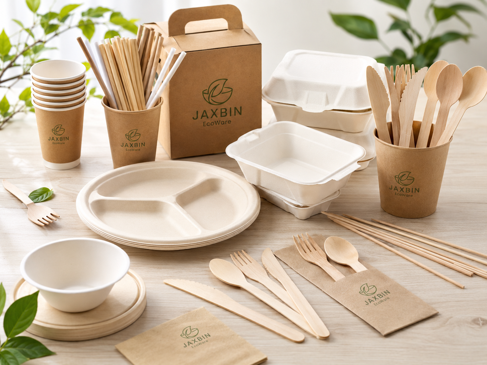
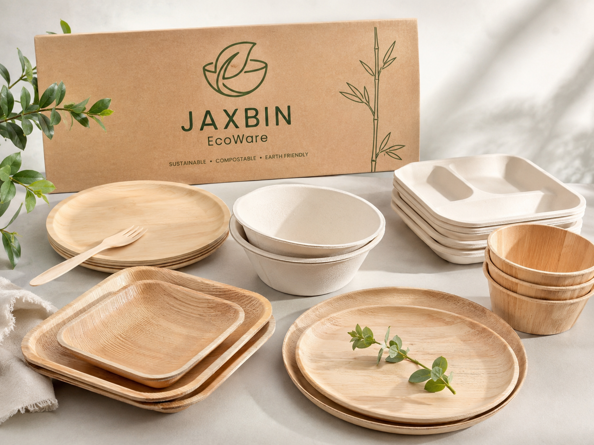
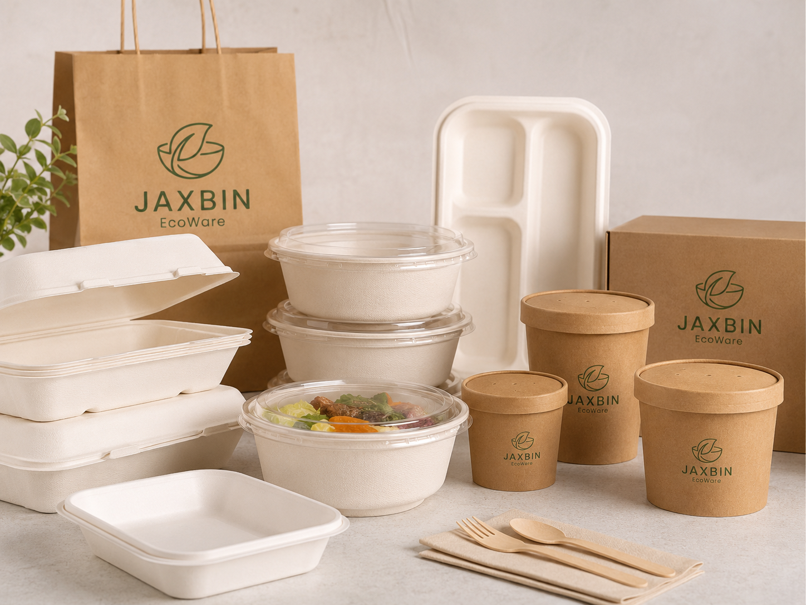
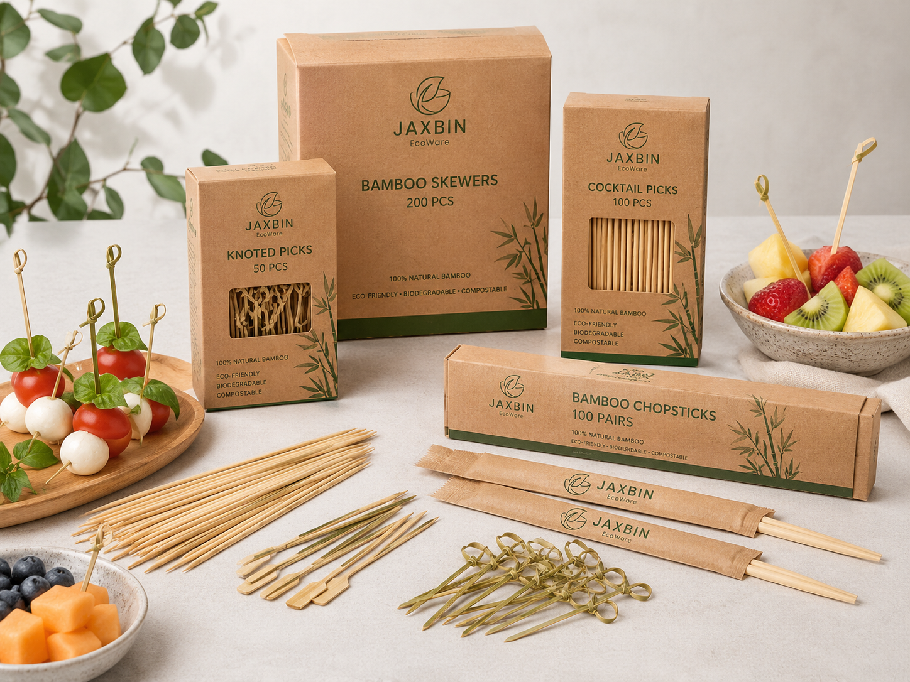
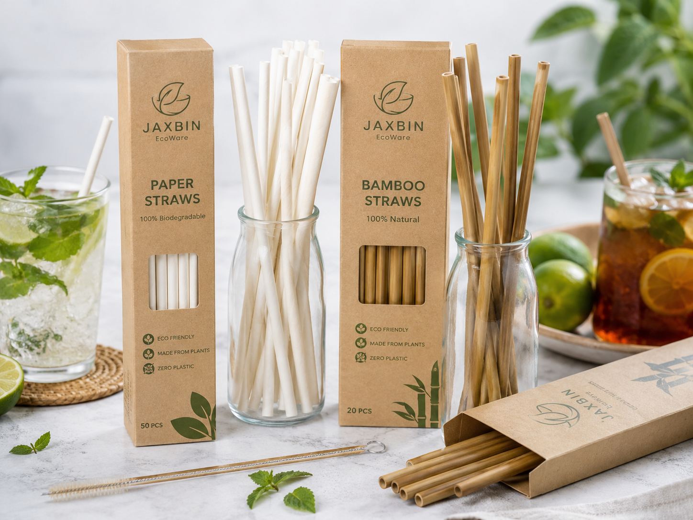
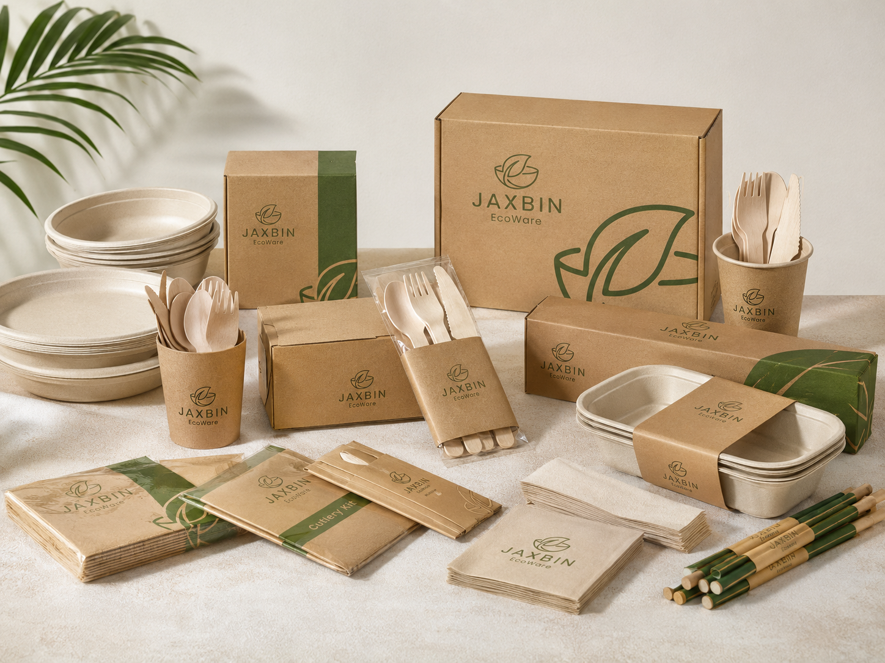
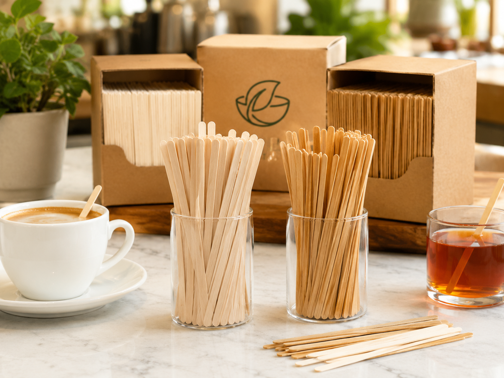

Disposable Wooden Fork
A smooth, lightweight fork for takeaway meals, catering, tasting events and foodservice kits.
Jaxbin Ecoware helps importers, distributors, restaurant groups and private-label buyers source wooden, bamboo, bagasse, paper and compostable tableware with clearer specifications, practical OEM support and export coordination.

A catalog organized around the way professional buyers source: by use, material, pack format and destination market.

Forks, knives, spoons and complete meal kits.
Explore range
Bagasse, bamboo and wooden serveware for foodservice.
Explore range
Molded-fiber and paper formats for takeaway and delivery.
Explore range
BBQ skewers, cocktail picks, knotted picks and chopsticks.
Explore range
Coffee stirrers and food-production ice cream sticks.
Explore range
Paper and bamboo beverage accessories for branded service.
Explore rangeA smooth, lightweight fork for takeaway meals, catering, tasting events and foodservice kits.
Single-use wooden knife designed for sandwiches, pastries and light meals with a natural brand presentation.
Rounded wooden spoon for desserts, soups, yogurt, sampling and grab-and-go meal kits.
A ready-to-serve wooden cutlery kit for restaurants, airlines, hotels, events and delivery brands.
A molded-fiber plate for catering, takeaway service, parties and foodservice distribution.
Hinged takeaway containers for restaurants, meal prep, catering, delivery and institutional foodservice.
Straight, polished bamboo skewers for barbecue, fruit, appetizers, catering and food processing.
Smooth single-use stirrers for cafés, offices, hotels, airlines and beverage service stations.
Clear specifications, practical customization options and a quotation flow that helps reduce sourcing back-and-forth.
Consolidate related tableware and foodservice accessories under one project.
Develop sleeves, wraps, labels, retail packs and shipping cartons for your brand.
Confirm samples, dimensions, moisture, surface finish, packing and carton marks.
Support for mixed specifications, packing lists, shipment planning and documentation.

Choose the item first, then configure dimensions, packing, artwork and carton details around your sales channel.
Efficient carton configurations for distributors and restaurant supply.
Paper sleeves, napkins and combined meal-service sets.
Custom pack counts, labels, barcode zones and shelf-ready cartons.
The faster you provide specifications, quantities and destination details, the faster a meaningful quotation can be prepared.
Product, size, pack, quantity, target price and destination.
Review drawings, reference samples, artwork and documentation needs.
Check function, appearance, dimensions and packaging before production.
Quality checks, final packing, loading plan and export coordination.
Wood, bamboo, bagasse, paper and CPLA have different sourcing, performance and end-of-life considerations. Jaxbin avoids one-size-fits-all claims and recommends confirming the exact SKU and local disposal infrastructure.
Identify composition, coating, adhesive, ink and any mixed-material parts.
Request current test reports or declarations relevant to the product and market.
Match claims to accepted facilities and local collection systems.


A practical look at materials, processing, moisture control, packing and supplier evaluation for foodservice buyers.
Read guideCompare direct manufacturers, distributors and private-label suppliers—and know what to ask before placing an order.
Read guideWhy wooden stirrers are normally designed for one service cycle and what that means for hygiene and operations.
Read guideSend your product list, estimated quantity and target market. We will organize the questions needed for an accurate quotation.